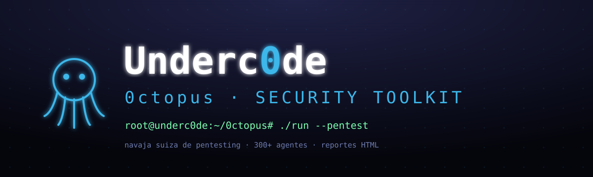
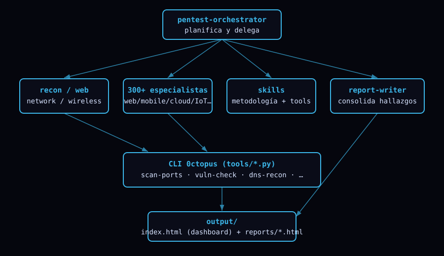

$ Navaja suiza de pentesting de Underc0de — CLI + reportes HTML + 300+ agentes de seguridad.
Requisitos e instalación en Linux/macOS/Windows.
CLI, menú interactivo y comandos.
Referencia de las 18 herramientas.
HTML + dashboard estilo Underc0de.
Orquestador, 300+ subagentes y skills.
Estructura y flujos del proyecto.
Uso responsable y alcance.
Preguntas frecuentes.
Manual imprimible.
Los 307 agentes por dominio.
git clone https://github.com/underc0delabs/0ctopus.git cd 0ctopus python -m venv env && source env/bin/activate # Windows: env\Scripts\activate pip install -r requirements.txt # Reconocimiento + web python 0ctopus.py enum-subdomains --domain ejemplo.com python 0ctopus.py header-analyzer https://ejemplo.com python 0ctopus.py vuln-check --url https://ejemplo.com # Abrir el dashboard de reportes # -> output/index.html
